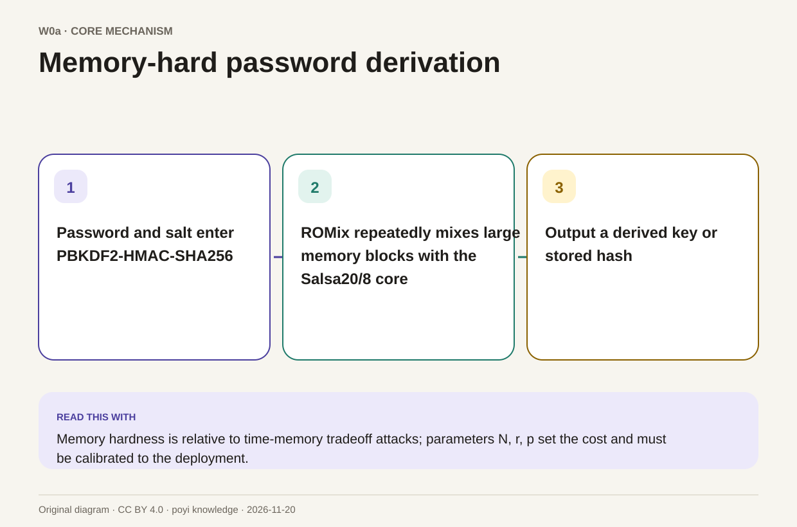

Principles
Algorithm: scrypt (scrypt 内存硬口令派生). scrypt does what PBKDF2 does — turn a passphrase into a key — but it makes you occupy a large block of memory first. Three steps (RFC 7914 §6):
1. B[0..p-1] = PBKDF2-HMAC-SHA256(P, S, 1, p * 128 * r)
2. for i = 0..p-1: B[i] = scryptROMix(r, B[i], N)
3. DK = PBKDF2-HMAC-SHA256(P, B[0] || ... || B[p-1], 1, dkLen)
scryptROMix is the heart, and it runs two loops:
-
Fill: X = B; repeat N times, storing X into
V[i]each round and setting X = scryptBlockMix(X). The result is N copies of the state sitting in memory. - Random walk: repeat N times,j = Integerify(X) mod N, thenX = scryptBlockMix(X xor V[j]). j is data-dependent — the attacker has to actually read that memory to continue. scryptBlockMix is the Salsa20/8 core (64-byte in, 64-byte out, eight rounds of Salsa20) plus a shuffle that interleaves even- and odd-indexed blocks, turning 2r 64-byte blocks into r 128-byte blocks. What the three parameters mean physically: -
N (must be a power of two greater than 1): sets both time and memory. Memory use is exactly
128 × N × rbytes. - r (block size): mainly shapes the memory layout. - p (parallelism): splits the work into p independent pieces, without increasing memory use — it buys CPU time, not RAM. Take OWASP's recommendedN = 2^17, r = 8, p = 1: memory = 128 × 131072 × 8 = 134,217,728 bytes, exactly 128 MiB. The central property is sequential memory-hardness: an adversary with less memory per core than the function needs pays a steep time penalty, and running b instances in parallel demands b times the memory. In other words, parallelism is dragged along by memory cost. RFC 7914 §14 puts it carefully: ROMix has been proven sequentially memory-hard under the random oracle model for H, and scrypt's security additionally rests on the assumption that the Salsa20/8 core offers no shortcuts.

Why it matters
scrypt exists for one reason: GPUs and ASICs get cheaper much faster than memory does.
Section 1 of RFC 7914 says this bluntly. Every classic password KDF — DES crypt, MD5 crypt, SHA-crypt, PBKDF2, bcrypt — is "iterate plus salt". You can raise the iteration count as hardware improves: keep the user's per-login time constant, and on paper nothing is lost.
It is a paper-only peace. Brute-force password search is perfectly parallel by nature. Your server tests one password at a time; the attacker's GPU tests tens of thousands simultaneously. Multiplying the iteration count by ten slows the attacker's clock by ten, but the chip count in his hands has not changed. The metric that actually matters — compute per dollar — keeps sliding toward the attacker. Progress in semiconductors makes circuits not just faster but smaller, so the same money buys more parallelism. It gets worse every year.
scrypt's answer is not "iterate more". It moves the battlefield from arithmetic to memory bandwidth, which is clever because:
- Cores on a GPU do not share fast cache. Every extra parallel instance needs its own slab of memory. The cost structure of a GPU — vast compute, tiny cache — is completely dismantled. - Once an ASIC exists, the bottleneck shifts from compute to memory bandwidth. Memory bandwidth is the more expensive and harder-to-stack resource.
RFC 7914 adds a pragmatic observation: the SMix instances are independent, so a large p raises computational cost without raising memory use — as CPU power and memory capacity diverge, scrypt can still be retuned.
Its honesty: scrypt is not "the strongest", it is "the best value defensive position". Argon2, which came out of the 2015 Password Hashing Competition, has better memory-hardness and better side-channel behaviour, and OWASP now ranks Argon2id first and scrypt second. But Argon2 is more complex, has more parameters and is easier to get wrong; scrypt remains good enough almost everywhere.
Applications
- Tarsnap: Colin Percival's own backup service uses it to protect the master key — scrypt's first real production deployment. - System passwords on Debian / Ubuntu:
libxcrypt's default password hash is yescrypt, a scrypt-based variant that displaced SHA-512crypt. A scrypt relative is running on most Linux machines shipped by distributions. - OpenSSL: since 1.1.1 the SCRYPTEVP_KDFimplementation is available, usable for TLS PSK identity derivation and for encrypting PKCS #8 private keys. - Python:hashlib.scrypt()(over OpenSSL). Go:golang.org/x/crypto/scrypt. Rust: RustCrypto'sscryptcrate. Java: Bouncy Castle. Every language has a ready-made implementation. - The ASN.1 definition in RFC 7914: theid-scryptOID is1.3.6.1.4.1.11591.4.11, usable directly inside PKCS #8 encrypted private keys; the RFC even includes a complete PKCS #8 example atN = 2^20, r = 8, p = 1. - Embedded and compliance settings: memory-constrained devices use it for key derivation, and FIPS 140-3 validated libraries have room for it (unlike Argon2, which needs extra validation coverage). - OWASP's recommended parameters (2023 edition):N = 2^17, r = 8, p = 1(128 MiB) as the first choice, plusN = 2^16, p = 2,N = 2^15, p = 3,N = 2^14, p = 5andN = 2^13, p = 10as "roughly equivalent defence" alternatives that trade RAM for parallelism.
Limits & attacks
scrypt has not been "broken", but it has failure modes you need to know.
- Memory is both its defence and its denial-of-service surface. RFC 7914 §14 warns explicitly that parameters must not come from an untrusted party, or an attacker can specify an absurdly large N and make the server allocate gigabytes. Any system that lets the client influence password-hash parameters — tokens, config blobs, pasted hash strings — has a memory-exhaustion vulnerability.
- There are published side-channel attacks. Forler, Lucks and Wenzel, in Memory-Demanding Password Scrambling (ASIACRYPT 2014), point out that scrypt's memory access pattern depends on the password (because j is derived from the state), so a cache-timing attack on the victim's own machine can recover the password; they also demonstrate a garbage-collector attack, and propose Catena as a remedy. This is scrypt's real regression versus PBKDF2: you buy memory cost and pay with access-pattern leakage.
- Memory-hardness leans on the physical assumption that DRAM is slow. Choe et al. (MEMSYS 2019) note that as near-data processing and compute-capable memory push computation into the memory device, the latency and energy cost of a memory access drops sharply — and the entire argument that buys time with memory accesses weakens. - Mispick the parameters and the memory-hardness is gone. RFC 7914 warns plainly: tune the parameters so memory use shrinks and the properties of the algorithm change. The only way to save memory without losing memory-hardness is to raise p (parallelism), not to lower N. OWASP adds a caveat of its own: swapping N for p does not preserve exact equivalence under all attacker models. - The passphrase lives in memory the whole time. scrypt's final step runs PBKDF2 over the raw passphrase, so it must stay resident for the entire computation — swap, core dumps and memory images may all capture it. RFC 7914 §14 makes the same point: passwords and intermediate values may remain in memory, core dumps and swap areas long after the implementation is done, so sensitive data belongs in protected memory. - The attack surface has moved to the next generation. Argon2id (the 2015 competition winner) is more careful about memory-hardness, side channels and DoS resistance, and is OWASP's first choice today. scrypt has slid to "second choice, legacy systems, simple reliable parameters". - It cannot save a password that is in the dictionary. Memory-hardness buys time, not entropy. "Password123!" still falls to a 128 MiB scrypt in about a second. - Quantum computing neither helps nor hurts much: Grover halves the work factor, which is trivial for a function already costing 128 MiB of memory. But if a quantum computer ever arrives, anything scrypt protects still has to move to a post-quantum scheme.
![Green “GIVES” column: Tunable time and memory cost; A memory-hard design against massively parallel guessing; A standardized parameter interface in RFC 7914. Amber “DOES NOT GIVE” column: Does not fix low password entropy; Does not fit every device’s memory budget; Does not replace side-channel and implementation review. Rose “DO NOT MIX IN” column: Using it as a general-purpose hash; Ignoring parameter downgrade under memory limits; Assuming larger parameters are always safer without benchmarks.](../../../assets/articles/scrypt-details/scrypt-scope.en.svg)
History
- May 2009: Colin Percival presents Stronger Key Derivation via Sequential Memory-Hard Functions at BSDCan 2009, and scrypt arrives. The thesis is in the title: a sequential memory-hard function is stronger than merely memory-hard, because it also pins down parallelism. - 2009–2010: scrypt enters production at Tarsnap; implementations such as Perl's
Crypt::Scryptappear. The cryptography community starts paying attention. - 2014: Forler, Lucks and Wenzel publish Memory-Demanding Password Scrambling, exposing the cache-timing and garbage-collector attacks against scrypt and proposing Catena. This is the first clear articulation of "memory-hard does not mean side-channel-free". - 2015: the Password Hashing Competition crowns Argon2. From here on, scrypt is "the safe second choice" rather than "the only modern option". - 2015:
draft-josefsson-scrypt-kdfenters the IETF. - 2016: RFC 7914 standardises scrypt, giving it ASN.1 syntax, the OID1.3.6.1.4.1.11591.4.11, PKCS #8 usage and the full test vectors — and writes "unreasonably large parameters cause a denial-of-service attack" into its security considerations. Later in 2016, Debian and Ubuntu'slibxcryptswitched the default password hash to yescrypt, which is scrypt-based. - 2020s: OWASP lists Argon2id first and scrypt second, and the recommended parameter set has grown from the originalN = 2^17, r = 8, p = 1into a menu graded by memory budget. scrypt continues to serve embedded, compliance and legacy systems.
Worked example & verification
Formal model and reproduction steps
[C=E_K(P;r),\qquad P=D_K(C)]
scrypt: the registered public parameters, key material or randomness, and message are mapped through the stated transformation to an output checked against the registered criterion. The worked example is a structural reproduction, not a new test vector; parameter ranges, standard versions and implementation details remain source-bound.
References
- Wikipedia search entry for scrypt 内存硬口令派生. https://zh.wikipedia.org/w/index.php?search=scrypt%20%E5%86%85%E5%AD%98%E7%A1%AC%E5%8F%A3%E4%BB%A4%E6%B4%BE%E7%94%9F
- Handbook of Applied Cryptography (Menezes, van Oorschot, Vanstone). https://www.cacr.math.uwaterloo.ca/hac/